Cabello y rostro
Tiene cabello negro puntiagudo y un ojo visible que brilla con un tono índigo. Su rostro está parcialmente cubierto.
Una historia marcada por la naturaleza, los recuerdos y una relación que terminó convirtiéndose en resentimiento.
Conoce a Azure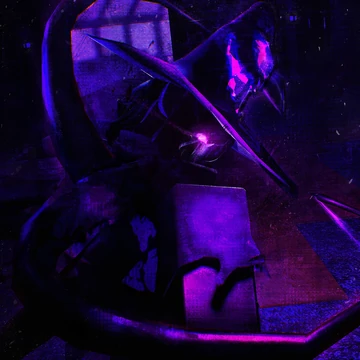
Azure, también conocido como Azurewrath, es un personaje del universo de Forsaken, un juego de Roblox. Su historia está relacionada con Two Time y el culto ficticio conocido como Spawn Cult.
Azurewrath
Azure
Él / Ellos (He / They)
Forsaken
Botánico del Spawn Cult
Two Time
Azure presenta una apariencia oscura y misteriosa, destacando principalmente sus elementos de color negro y violeta.
Tiene cabello negro puntiagudo y un ojo visible que brilla con un tono índigo. Su rostro está parcialmente cubierto.
Lleva un sombrero negro puntiagudo con una figura violeta brillante y una capa negra rasgada.
Presenta varios tentáculos negros en su espalda y un símbolo brillante de Spawn en el pecho.
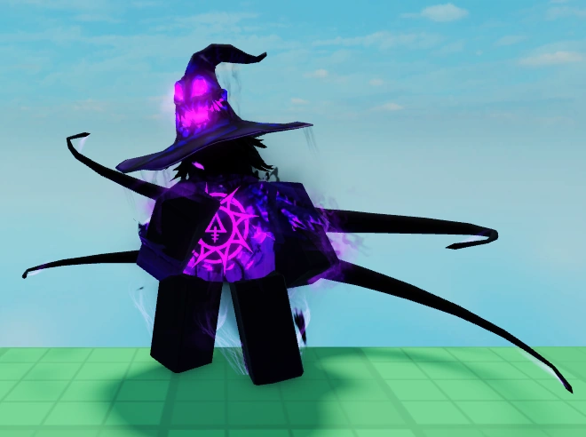
Antes de los acontecimientos de Forsaken, Azure pertenecía al Spawn Cult, una organización ficticia que creía en obtener una segunda vida mediante sacrificios.
Azure tenía interés por las plantas y la botánica. Se encargaba de estudiar hierbas y ayudar a otros miembros del culto cuando enfermaban.
Conoció a Two Time mientras esta persona recogía madera para el culto. Con el tiempo, ambos desarrollaron una relación muy cercana.
La devoción de Two Time por el culto terminó provocando la muerte de Azure. Después, The Spectre alteró sus emociones y lo convirtió en un personaje dominado por el resentimiento.
Azure y Two Time fueron pareja antes de los acontecimientos de Forsaken. Su relación comenzó como una amistad y posteriormente se convirtió en un vínculo romántico.
Sin embargo, las creencias del Spawn Cult terminaron afectando profundamente a Two Time. Esto provocó que traicionara a Azure durante un ritual relacionado con la promesa de una segunda vida.
Después de su muerte, The Spectre manipuló los sentimientos de Azure, convirtiendo sus recuerdos y emociones en resentimiento hacia quien alguna vez fue su pareja.
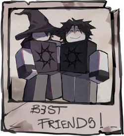
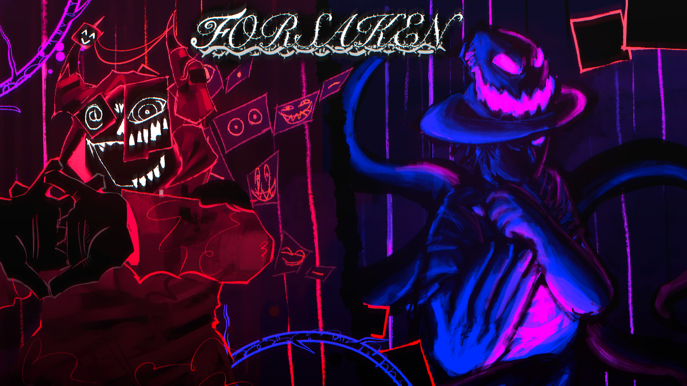
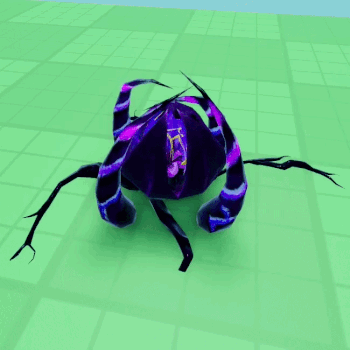
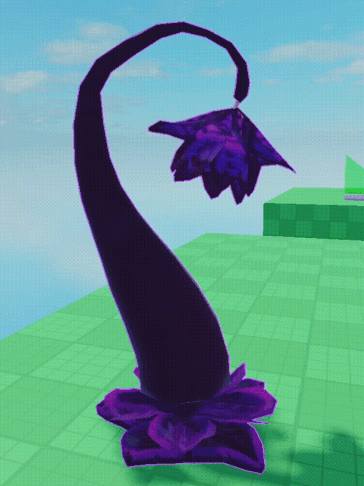
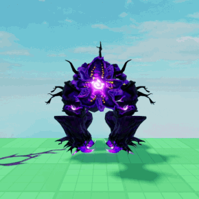
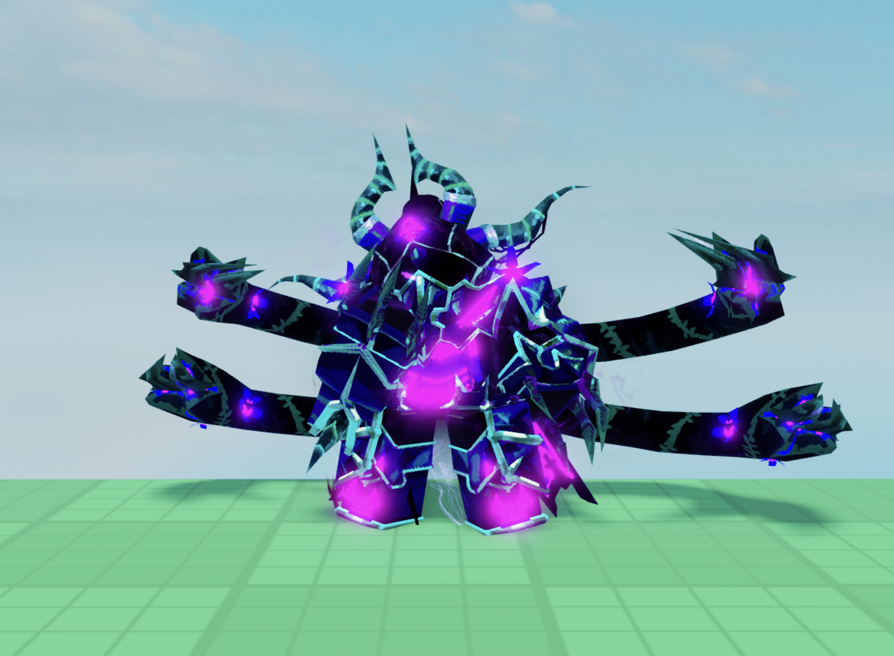
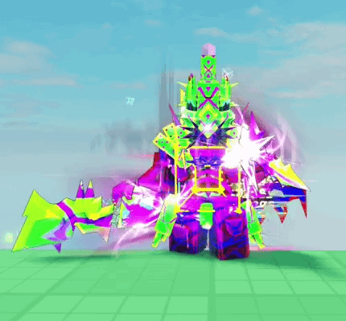
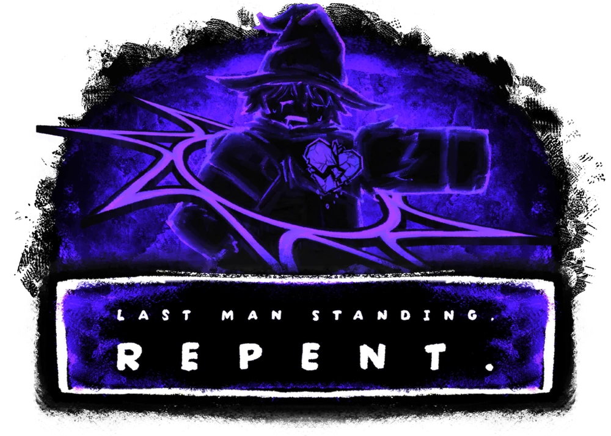
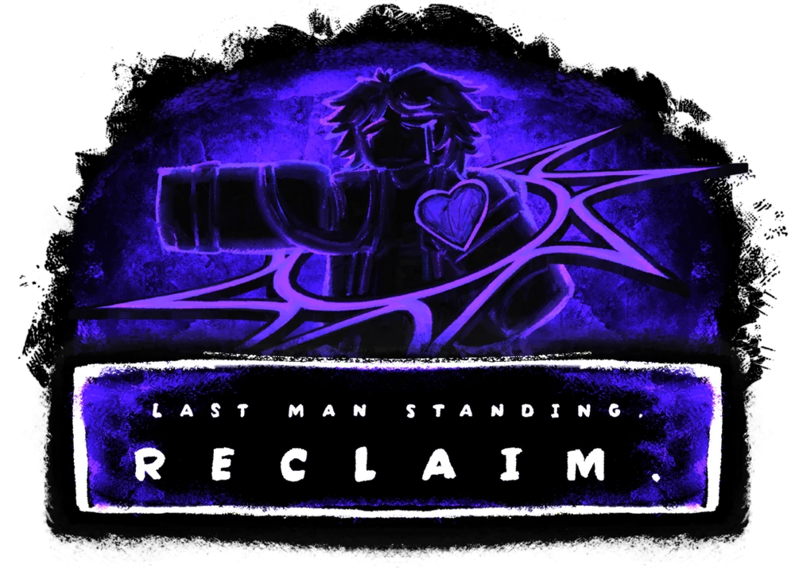